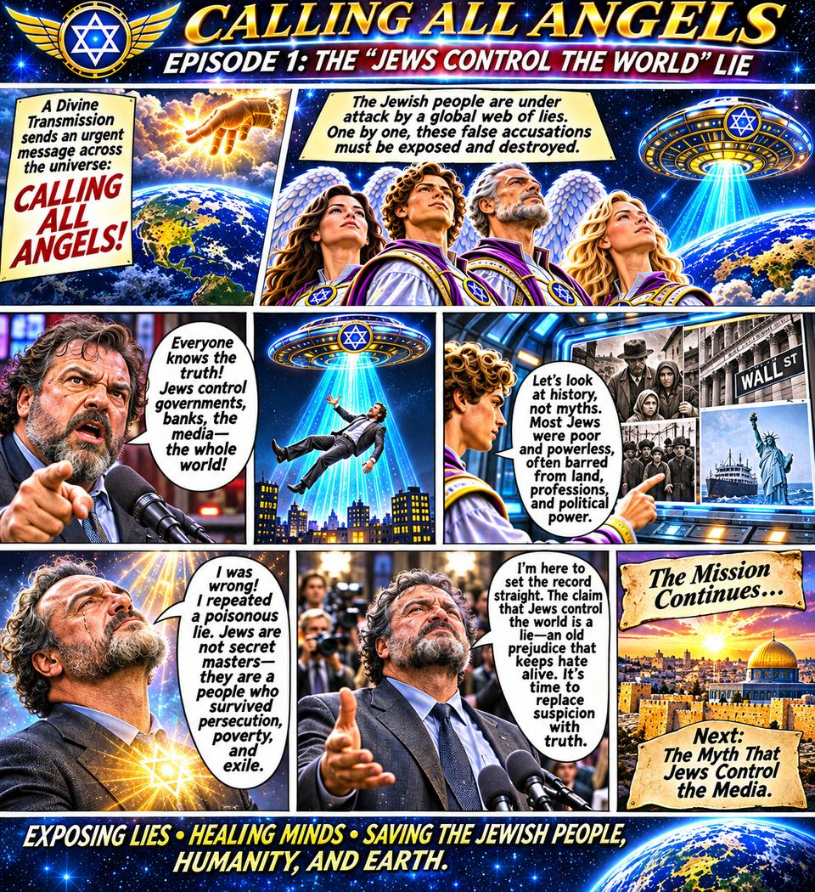
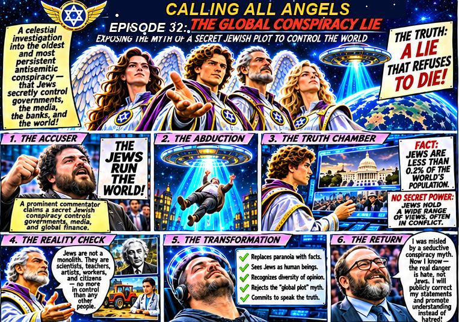

Solomon Rosenberg
A life remembered through illustrated testimony.

Writer · Visual Storyteller · Creative Director
As the son of Holocaust survivors, I use illustrated storytelling to preserve human testimony, explore Jewish history and challenge prejudice. These selected works demonstrate approaches ranging from personal remembrance to imaginative historical fiction.
A life remembered through illustrated testimony.
A reflection on the aftermath of liberation.

A story of humanity and survival.

Imagined encounters with history and Jewish contributions.


Original fiction exploring prejudice and dialogue.


Celestial investigators confront antisemitic claims, including the Conspiracy Department segment.

